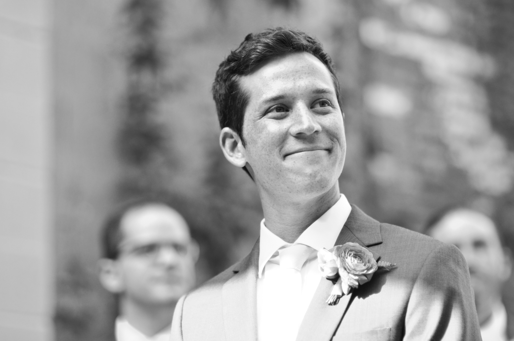

About Me
Hi! My name is Kenny. I'm a librarian working in digital publishing and digital libraries. I currently work at the University of Pennsylvania Libraries as the Digital Scholarly Publishing Librarian. Prior to Penn, I worked at the Digital Public Library of America, a non-profit digital library that aggregates metadata and thumbnails for millions of cultural heritage materials from libraries, museums and archives across the US. I previously worked at the Berkman Klein Center for Internet & Society at Harvard University. My interests include reading, soccer, video games, GLAMs, and spending time with my wife and family. I'm an alum of Vassar College and Simmons University.
I'm currently enrolled in the Penn LPS Coding Bootcamp, hence this nifty portfolio page. I've always loved fiddling with design and technology, so I'm eager to pull those interests together into a coherent technical skillset.